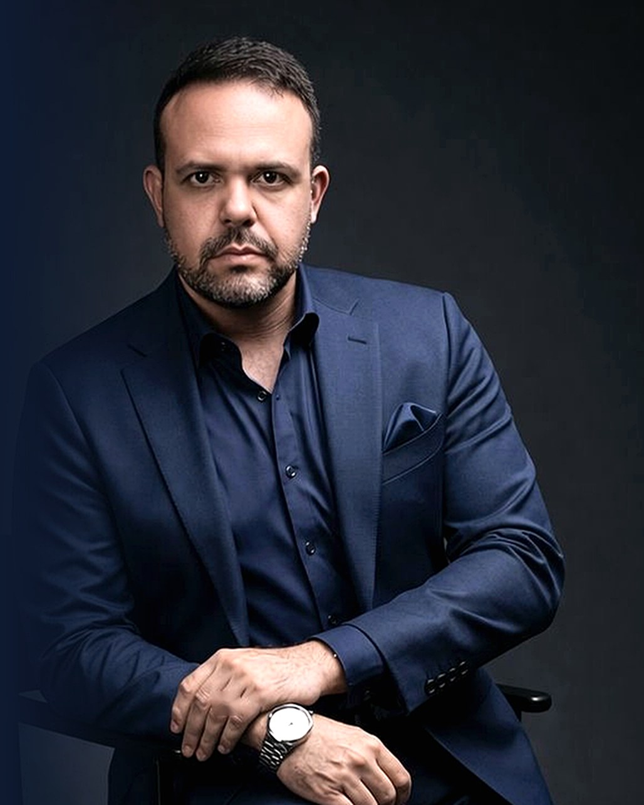

O Instituto Couto não vende sessões. Constrói protocolos — manipulados individualmente, entregues pela via que o seu caso exige, e medidos a cada etapa.
Você escolhe o eixo — o que precisa resolver. A avaliação define a via — como o ativo chega ao seu corpo. Cada cruzamento é um protocolo. Clique em qualquer célula para ver o que existe nela.
| EIXO ↓ VIA → | VIA IIntramuscularSemanal · 8 a 16 sessões | VIA IIEndovenosaSoroterapia · sessão ou pacote | VIA IIIImplantePellet subcutâneo · até 6 meses | VIA IVLocalIntradérmica · subcutânea |
|---|
Uma triagem preliminar que avalia objetivo, rotina e elegibilidade clínica — e indica o eixo, a via e o protocolo mais alinhados ao seu caso. Gratuita e sem compromisso.
Duas barreiras destroem o ativo antes que ele encontre a célula: a degradação digestiva e o metabolismo hepático de primeira passagem. As quatro vias do Instituto Couto existem para contorná-las — cada uma com um perfil de absorção, duração e rotina diferente.
"A diferença não está na sua força de vontade. Está na rota que o ativo percorre — ou não percorre — até as suas células."Dr. José M Couto

Investigação precisa, método e conduta médica assertiva.
Abra apenas o eixo que interessa a você. Dentro dele, filtre pela via. Todos os valores incluem avaliação, compostos manipulados individualmente e acompanhamento durante o programa.
Valores referentes ao programa completo. Parcelamento: entrada de 50% + 10 parcelas no cartão de crédito. A indicação depende de avaliação individual por profissional de saúde habilitado e pode não ser autorizada. Resultados individuais variam. Os ativos listados são os principais componentes — a formulação completa é entregue na compra, conforme ANVISA RDC 67/2007. Protocolos de suporte integrativo: não substituem tratamento médico convencional.
A via não é preferência — é indicação. Ela define a rotina, a duração do efeito, o custo e o nível de acompanhamento. É por isso que um pellet e um blend semanal ocupam faixas de preço tão distintas.
O composto é depositado no músculo e absorvido de forma gradual. É a via de construção: o efeito é cumulativo, sessão após sessão.
A soroterapia entrega volume e concentração que a via muscular não comporta. É a via de reposição intensiva e recuperação.
Um implante absorvível do tamanho de um grão de arroz, inserido sob a pele. Libera o ativo de forma contínua por meses. É a via da estabilidade.
Microinjeções na própria região a ser tratada. Concentra o ativo onde ele deve agir e reduz a exposição sistêmica.
O pellet é o único protocolo do Instituto que não pode ser iniciado no mesmo dia. Ele exige exames, imagem e um mapeamento integrativo conduzido pelo Dr. Couto. Você reserva a sua vaga; o implante só acontece depois que ele libera.
Você garante a agenda do procedimento com entrada de 50% + 10 parcelas. É o que abre o protocolo de avaliação.
Envio antecipado de exames de sangue e de imagem, conforme a solicitação individual do Dr. Couto.
Consulta de análise completa: história, exames, eixos hormonais e metabólicos, risco e indicação.
Sem contraindicação, o implante é realizado. Com contraindicação, o procedimento não é feito — e o valor é redirecionado ou restituído.
Importante. Implantes contendo testosterona ou nandrolona estão sujeitos à Portaria 344/98 — exigem receituário de controle especial e não podem ser adquiridos sem prescrição. Alguns implantes são utilizados em caráter off-label, com indicação individualizada e termo de consentimento informado. A decisão é sempre clínica, caso a caso.
Quatro degraus. O primeiro resolve um problema. O último constrói um corpo que aguenta a ambição — que é, no fim, o motivo pelo qual todo executivo chega aqui.
Um protocolo, uma via, um eixo. Avaliação, compostos manipulados e acompanhamento durante todo o programa.
Dois protocolos que se potencializam, conduzidos em paralelo. Bioimpedância mensal e revisão inclusas — sem desconto, com mais entrega.
Três protocolos ao longo de 12 meses + quatro soroterapias + bioimpedância mensal + revisões trimestrais com o Dr. Couto + agenda prioritária.
Dois pellets + quatro protocolos intramusculares + seis soroterapias + painel laboratorial completo + bioimpedância mensal + consultas ao longo de 12 meses.
Medicina hormonal e de performance com acompanhamento contínuo, desenhada para agenda de alta exigência. Dois pellets, quatro protocolos intramusculares, seis soroterapias, painel laboratorial completo e revisão médica ao longo de doze meses.
Conhecer o programa"Integrativa não é mágica. É estratégia: sono, músculo, metabolismo, estresse, alimentação, exames, hábitos — tudo mensurado e executado. Não é sobre tratar doença. É sobre construir saúde antes que a conta chegue."
Existo para pegar gente de alta performance e construir um corpo que aguente a ambição.Instituto Couto de Medicina Avançada
A Resolução CFM 2.336/2023 veda ao médico a divulgação de depoimentos de pacientes com finalidade promocional. Muitas clínicas publicam assim mesmo. Nós não.
Também não publicamos antes e depois, não prometemos número de quilos e não garantimos resultado — porque nenhum médico honesto pode garantir. O que oferecemos no lugar é o que realmente sustenta uma decisão: método, métrica e a fórmula na sua mão.
Bioimpedância com percentual de gordura, massa muscular, gordura visceral e hidratação. Marcadores laboratoriais definidos por protocolo. Checkpoints com data marcada — não impressão.
Todo composto é manipulado exclusivamente para você em farmácia magistral certificada. A formulação completa, com todas as concentrações, é entregue junto com o produto — exigência da ANVISA RDC 67/2007.
Se a triagem identificar contraindicação, o protocolo não é liberado — e explicamos o porquê. Já recusamos pacientes que queriam pagar. É esse filtro que dá valor ao sim.
Avaliação presencial em São José dos Campos, protocolo manipulado exclusivamente para você e aplicação por profissional habilitado com material estéril descartável.
Agendar avaliaçãoProtocolos da Via I enviados para qualquer cidade do Brasil, com embalagem térmica, lacre de segurança, documentação e guia técnico de aplicação.
Solicitar envioO protocolo completo com guia técnico detalhado para que um profissional de saúde habilitado da sua cidade realize a aplicação, com suporte remoto do Instituto.
Receber o kitA entrada de metade do valor não é uma barreira — é um filtro. Quem começa assim conclui o protocolo, e protocolo concluído é resultado. As dez parcelas restantes representam 5% do total cada: a ancoragem mensal continua leve.
Cartão de crédito, sem juros. Pagamento à vista com condição especial. O valor exato é confirmado antes de qualquer compromisso.
Três minutos de triagem. Sem custo, sem compromisso, sem cadastro. Ao final você sabe o eixo, a via e o protocolo — e se é ou não elegível.